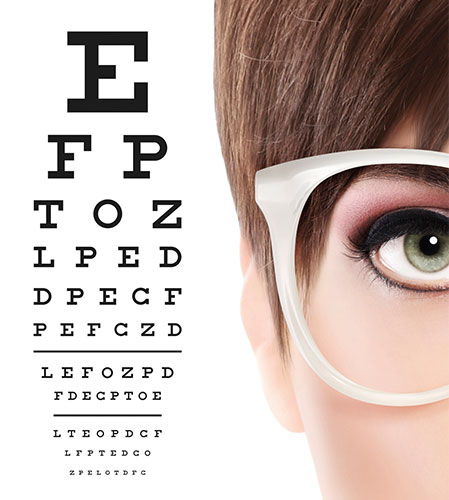

Synundersökningar & Terminalglasögon
Förstå din syn och dina rättigheter vid datorarbete
Sida 1 av 5
Förstå din syn och dina rättigheter vid datorarbete

Bildkälla: Illustrationer av synundersökning
Nu är du redo! Testa dina kunskaper om synundersökningar och terminalglasögon! 👓
Filstruktur: Detta quiz är byggt med separation of concerns-principen, där HTML, CSS och JavaScript är uppdelade i separata filer:
Att dela upp kod i separata filer ger flera fördelar:
Skapad: 2026-01-16
Baserad på: Blogginlägg om synundersökningar och terminalglasögon, Arbetsmiljöverkets föreskrifter (AFS 2023:11), samt Kent Lundgrens synundersökningar från maj 2021 och januari 2026.
Fokus: Förståelse för synundersökningar, tolkning av synrecept och rättigheter vid bildskärmsarbete.
Quiz: Synundersökningar och Terminalglasögon
Frågor och fördjupade förklaringar baserade på (i Harvard-format):
Detta quiz är skapat för att öka förståelsen för synundersökningar i Sverige och dina rättigheter till terminalglasögon vid bildskärmsarbete.
👓 Fokus: Hur synundersökningar går till, tolkning av synrecept, presbyopi, olika glastyper och arbetsgivarens skyldigheter.
Läs det fullständiga blogginlägget: "Att förstå synundersökningar och terminalglasögon".
Arbetsmiljöverket: www.av.se
Läs mer på bloggen: Controller utan gränser